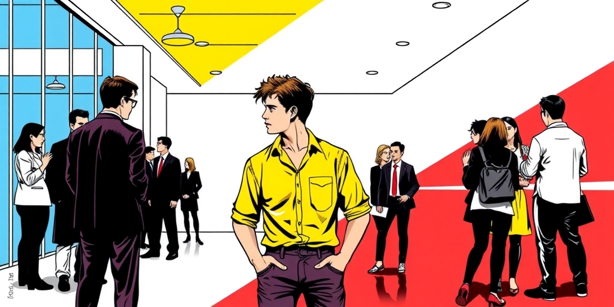
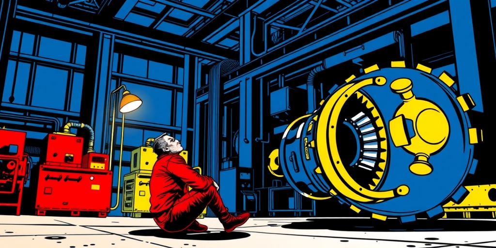
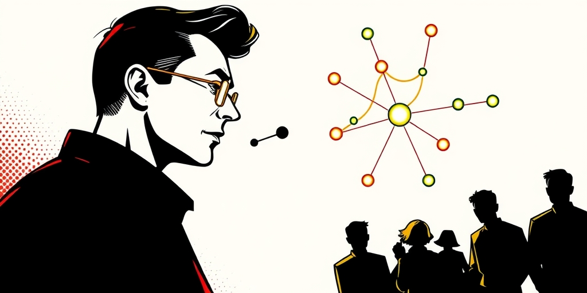
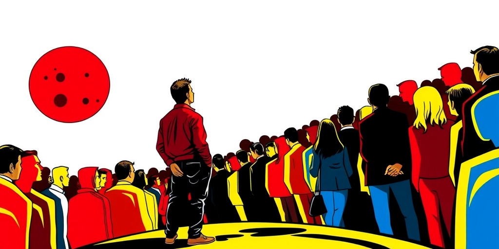

小汪老师的成长洞察 · 属于你的成长专栏
网景公司的大厅里，一个年轻人紧张得不敢跟任何人说话。他太害羞了。于是他转身离开，回去创办了自己的公司。十二年后，他创办的其中一家公司，让网景所在的整个行业变得无关紧要。这不是一个克服内向的故事，而是一个内向如何成为认知武器的故事。

马斯克的公开演讲有一种标志性的不流畅。结巴、跳跃、找不到词、长时间的沉默停顿。他在Joe Rogan的播客上抽大麻，不是因为酷，更像是不知道该把手放在哪里。
SpaceX工厂里的工程师描述他会一个人坐在角落里，盯着一块火箭零件看几个小时。不说话，不接电话。他的社交方式不是喝酒吃饭混圈子，是半夜发邮件和凌晨发推。
年轻时在加拿大读书期间，同学们的记忆是“他几乎不跟人说话，但每次开口说的话都让所有人停下来”。这些场景拼出一个和“大企业家”刻板印象完全相反的人。不是乔布斯式的剧场型魅力领袖，不是贝索斯式的碾压型谈判家。他是在社交场合高度不适、但在认知深度上极度自信的边缘人。这个社交场上的失败者，却在硬科技领域建起了万亿帝国。悖论就在这里。

深度优先胜过广度优先。硬科技创业——可回收火箭、电动车规模化、脑机接口——需要的不是认识很多人，而是在同一个物理问题上持续思考很多年。内向者的注意力结构天然倾向于单线程深度沉浸。这在社交场上是个劣势，别人聊三个话题了你还在想第一个。但在物理和工程问题上是致命优势。SpaceX早期连续三次发射失败，没有深度的偏执式专注根本撑不过去。
社交免疫等于共识免疫。外向者从社会交往中获得信息和能量，但也潜移默化地接受了“大家认为什么可能”。马斯克不听这些。不是因为傲慢，是因为他本来就不太在意社交信号。当全体航天工业都说“可回收火箭不划算”时，他不是反对共识，他是没收到共识的信号。第一性原理思维不只是一个智力习惯，它有一个情感前提：你对别人怎么想不够敏感。内向天然提供了这道防火墙。
异步沟通的统治力。在面对面社交中马斯克处于劣势——话说不利索、肢体语言僵硬、无法快速读懂对方情绪。但创业真正的权力媒介不是会议室，是邮件和推文。马斯克的邮件——凌晨三点写给全公司的“为什么这个零件的公差是0.01而不是0.005”——是一种不需要眼神接触的穿透力。他的推文改变了金融市场，不需要在CNBC上完成一场漂亮的采访。互联网时代最大的隐藏红利之一，是让内向者可以通过异步书面沟通达到面对面永远达不到的影响力。
一个极小的高信任圈，而非一个极大的弱关系网。典型的企业家到处混圈子、攒名片。马斯克的核心团队永远就那么几个人，从PayPal时代就跟着他。这不是“人脉窄”的弱点，是“信得过的人不需要多”的策略。在需要做出极端决策的事业中——比如把全部身家押在SpaceX第四次发射上——一个5人的高信任圈胜过5000人的弱连接。

马斯克公开承认过自己的阿斯伯格特质。这种特质提供了一种罕见的认知模式：系统性思维伴随着社交直觉的弱化。他能把特斯拉的供应链看作一个可以优化的抽象系统，而不是一个需要安抚几百个供应商的复杂人际网络。
他能把火星殖民看作一个物理学和工程学问题，而不是一个需要说服国会的外交问题。这种“社会关系的失明”在大多数人生场景中是障碍。但在极少数需要彻底重构一个产业的场景中，它是一种解放。
社会融入本身有一种隐蔽的代价。你吸收了“什么是可能的”这个共识。马斯克从未真正融入过任何群体——南非的校园霸凌受害者、加拿大的边缘移民、硅谷不被重视的南非口音怪人。这种持续的局外人状态让他从未内化过“不可能”这三个字。一个被群体充分接纳的人，会在潜意识里维护这个群体的边界。一个从来就没被接纳过的人，没有边界需要维护。

更深一层看，这指向一个反直觉的命题。我们通常认为“被社会需要”是成功的条件——你需要导师、投资人、合作伙伴。但那些真正改变底层规则的人，往往有一段“不被需要”的历史。
不是克服了不被需要，而是利用了不被需要。不被需要意味着不被既有的权力结构收编。意味着你的想象力没有被“合理范围”这个滤镜过滤过。马斯克不是在社交上的失败者找到了事业上的成功。他是把他社交上的失败——对共识的迟钝、对他人的不在意、对孤独的高耐受——直接转化为了认知上的优势。
那些我们拼命想让孩子改掉的内向特质——不跟人说话、沉浸在自己世界里、对别人的看法不太在意——会不会在某个特定战场上，恰恰是他们最稀缺的武器？这不是一个需要回答的问题。这是一个需要重新审视的假设。
写给你的话
我们习惯把“善于社交”等同于领导力，但马斯克的反例提示了一个更深的命题：在硬科技创业这个特定战场，内向者的某些特质可能恰恰是决定性的优势。不是所有战场都需要同一种士兵。问题是，我们的学校和家庭教育，有没有给那些不擅长社交、但能在某个问题上沉浸五个小时的孩子，留出一条通往他们自己战场的路？
小汪老师的成长洞察 · 属于你的成长专栏